Where every item came from, who moved it, and why
Every item movement in a community is now recorded. Granting, revoking, trading, claiming and using an item each write an entry naming who did it, who it moved between, and why.
An item's history is public within its community. Any member can read it, not just staff. That is deliberate: before trading with someone you can check where the thing they are offering actually came from, which is only useful if you don't need permission to look.
Every movement, filterable and searchable
One object's story, start to finish
Internal detail, kept out of public view
Revoked items keep their history
Open Item Ledger under Community in the sidebar. It lists every item movement in that community, newest first, with filter chips per event type and a search box that matches item names, members and reasons.
Each row is one event, not one item. Granting three potions in a single action is one line reading +3 — the quantity column counts the whole batch even when the page is only showing part of it.
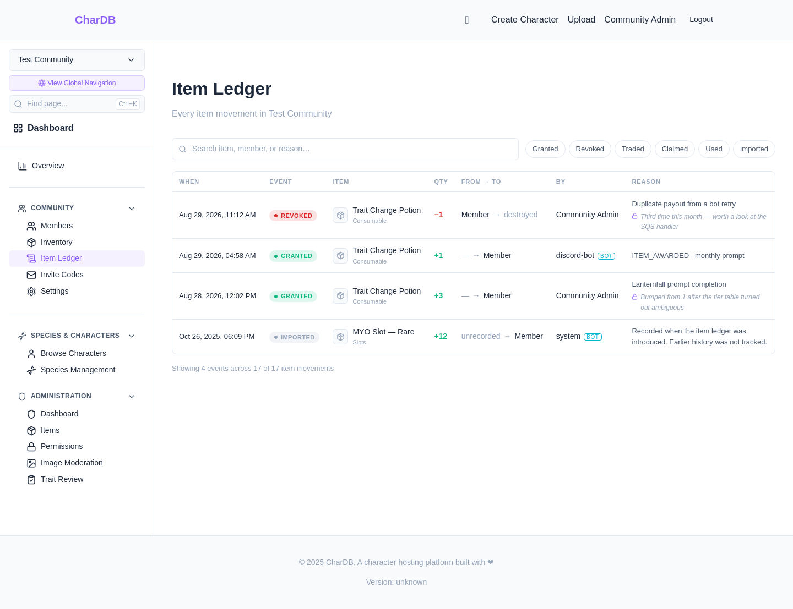
| Event | What happened |
|---|---|
| Granted | Staff or a bot created the item and gave it to someone. It has no source — nobody lost it. |
| Revoked | Taken back and destroyed. Always a correction, and always carries a public reason. |
| Traded | Moved between two members. |
| Claimed | Released to its owner once they linked the external account it was awarded to. |
| Used | Spent by its holder for whatever its type pays. See using an item up. |
| Imported | The item already existed when the ledger was introduced. Its earlier history was never recorded, and the entry says exactly that rather than inventing an origin. |
Actions taken by something other than a person are labelled — a Discord prize payout shows as discord-bot, and entries written by the platform itself show as system.
Every action can carry two separate pieces of text:
Compare the screenshot below with the one above. Same four events, same community, viewed by a member without item permissions: the reasons are all there, and the staff notes are simply absent.
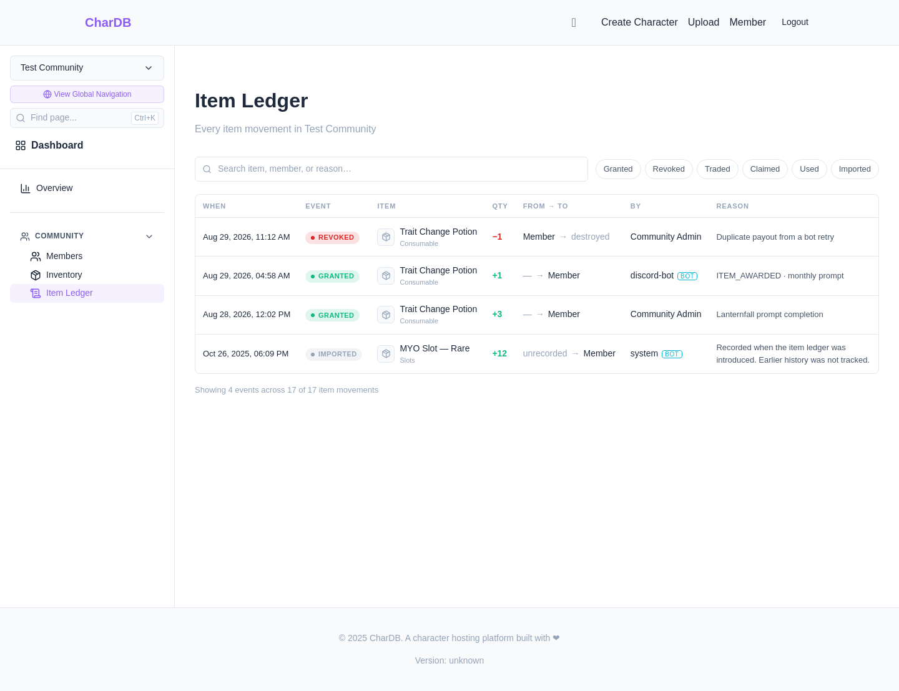
Every item has its own page showing just that object's story, oldest first. A history reads forwards; the ledger is a feed and reads backwards.
Reach it from an inventory tile or from the ledger. A tile showing a single item links straight to it. A tile grouping several does not — three potions do not share a history, so picking one of them to represent the others would be misleading, and the tile links to the item type instead.
Beside the timeline sit two panels:
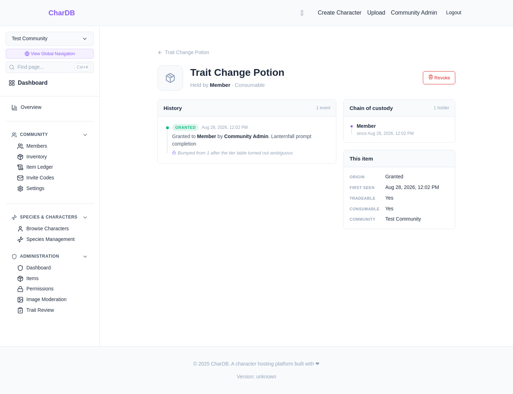
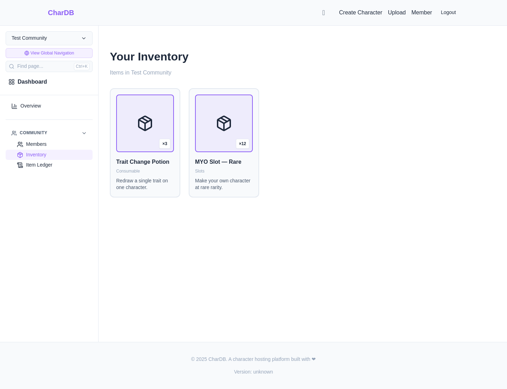
Revoking destroys an item. It leaves the holder's inventory immediately and cannot be used or traded — but its page keeps working, and its history stays readable.
That is the whole point. The moment anyone asks "why was this taken away?" is exactly the moment a deleted record would have been most useful, so revoking marks the item destroyed rather than erasing it.
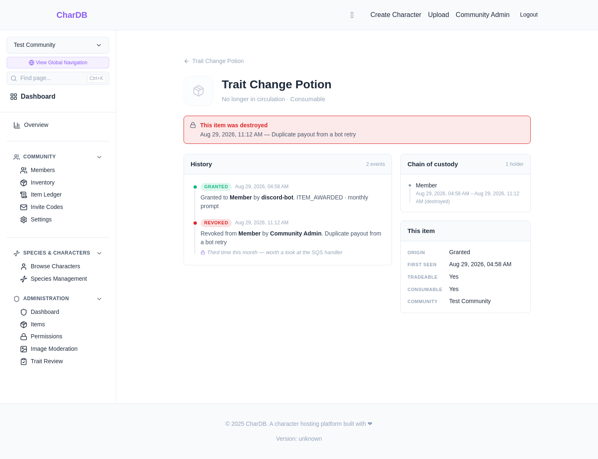
Items that already existed when the ledger was introduced get a single entry marking them as such. They are not shown as grants, because nobody granted them — the honest answer is that their origin was never recorded, and the entry says so.
Everything that happens to those items after that point is recorded normally, so a long-held item builds real history from the moment the ledger arrives.
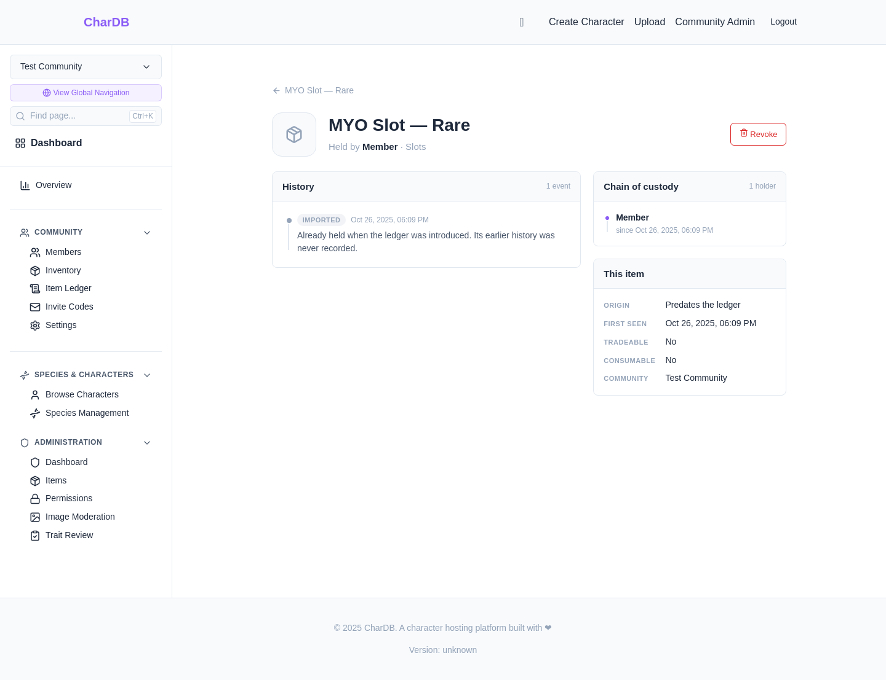
Items used to be stored as a count — three potions were one record with a quantity of three. They are now three separate records.
This is what makes history possible at all. If a record's quantity went from two to four to three, it cannot say which two of the three came from a particular trade. Storing each item separately gives every one an unbroken chain.
Nothing changes in day-to-day use:
Members holding the grant items permission see a Revoke button on any item still in circulation. It asks for two things:
The item leaves the holder's inventory immediately. Its page keeps working, the chain of custody shows the run ending in (destroyed), and both halves of the story stay readable.
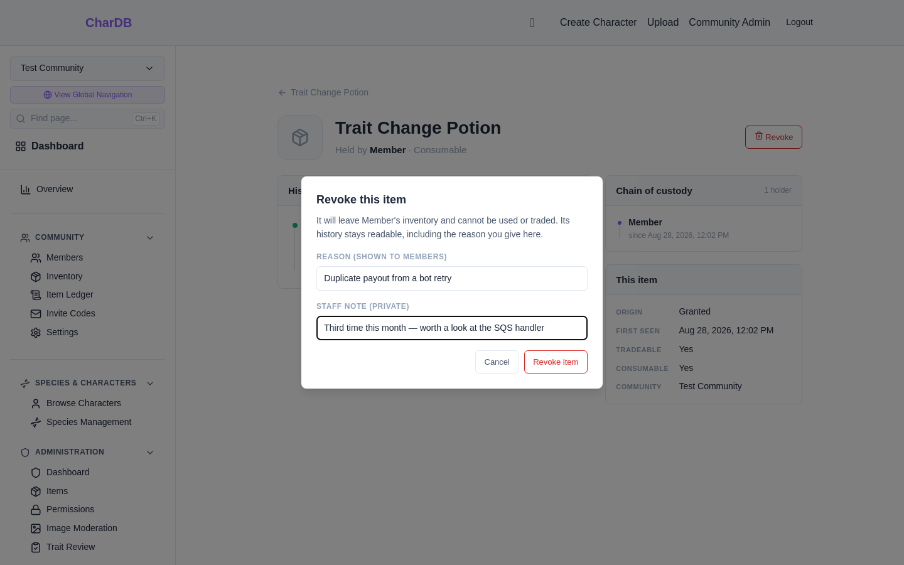
Revoking is staff taking something back. Using is the holder spending it themselves, and it is the other way an item leaves circulation — a Coin Ticket redeemed for currency, say. It shows here as a Used entry reading member → consumed, which is what tells it apart from a revoke at a glance.
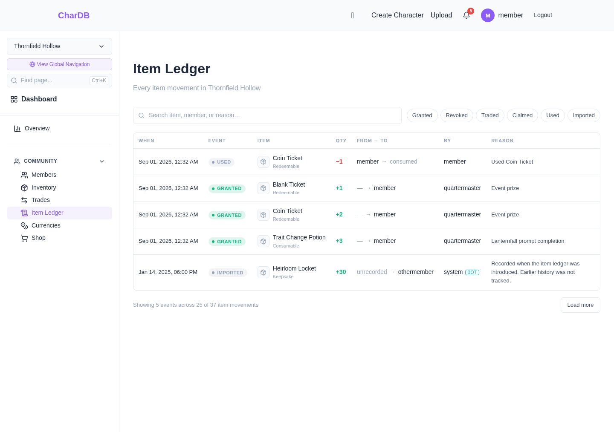
Setting what a type pays, spending one, and the three places it shows up afterwards are covered in their own walkthrough: Using Items.
Items under Administration lists every item type alongside the numbers that say whether it is healthy: how many exist, how many members hold one, what has been granted and revoked in the last 30 days, and how many are waiting on an account link.
Circulation and holders are different numbers. Three potions held by one person is three in circulation and one holder. An unclaimed item counts toward circulation but toward nobody's holdings — it was created, it just is not in anyone's inventory yet.
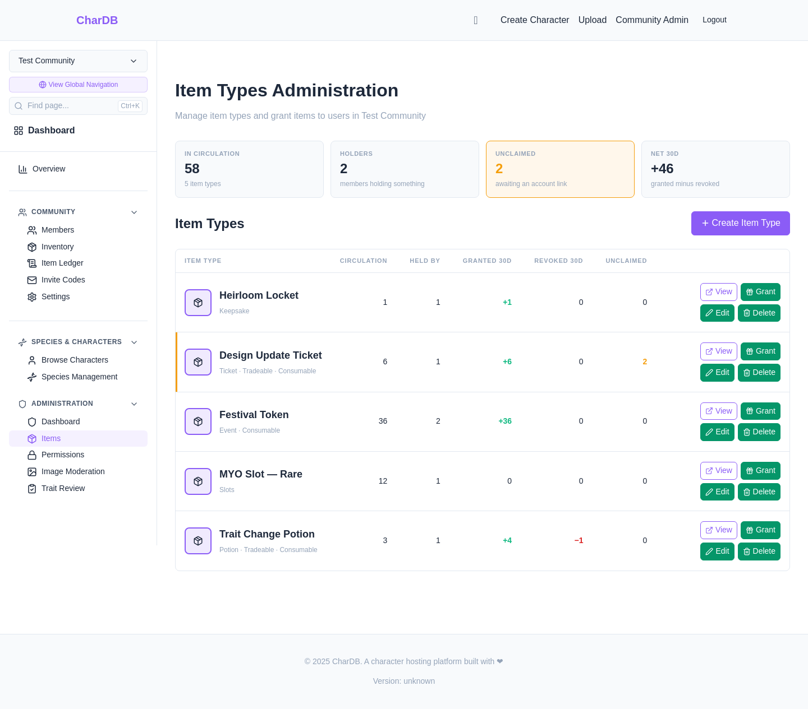
Members lists everyone in the community with their role, and each row links straight to that member's items.
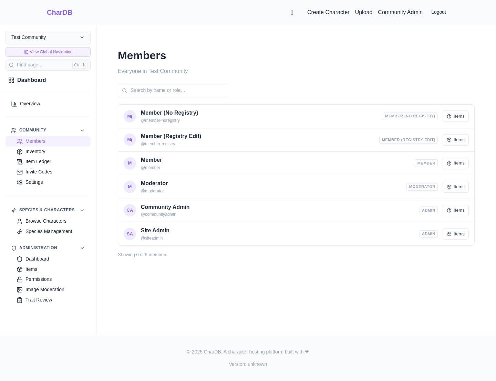
One page shows what a member holds, grouped by item type with a count. Expanding a group lists the individual items, each linking to its own history.
It is the same page whoever is looking — yourself, someone you are about to trade with, or a member you are checking on. Inventories are public within a community, so there is one view rather than three that could disagree.
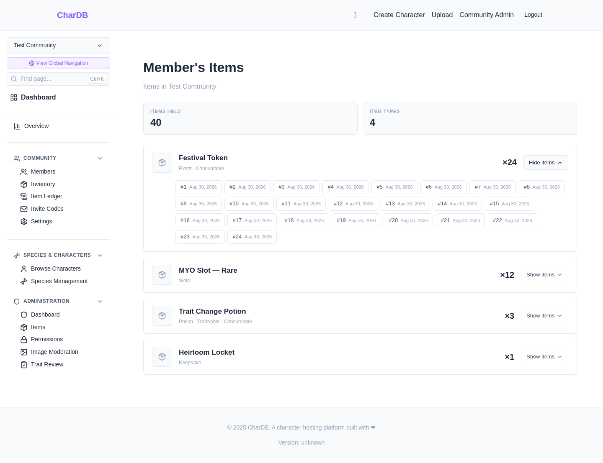